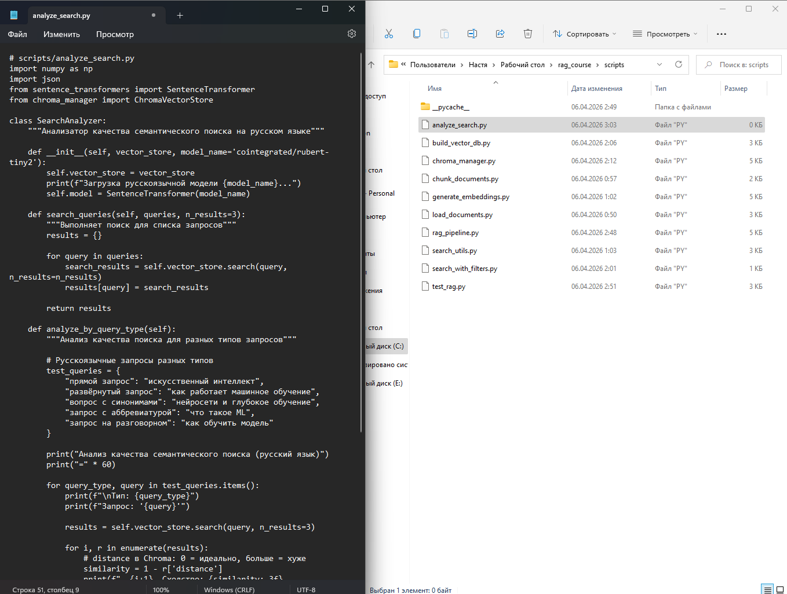
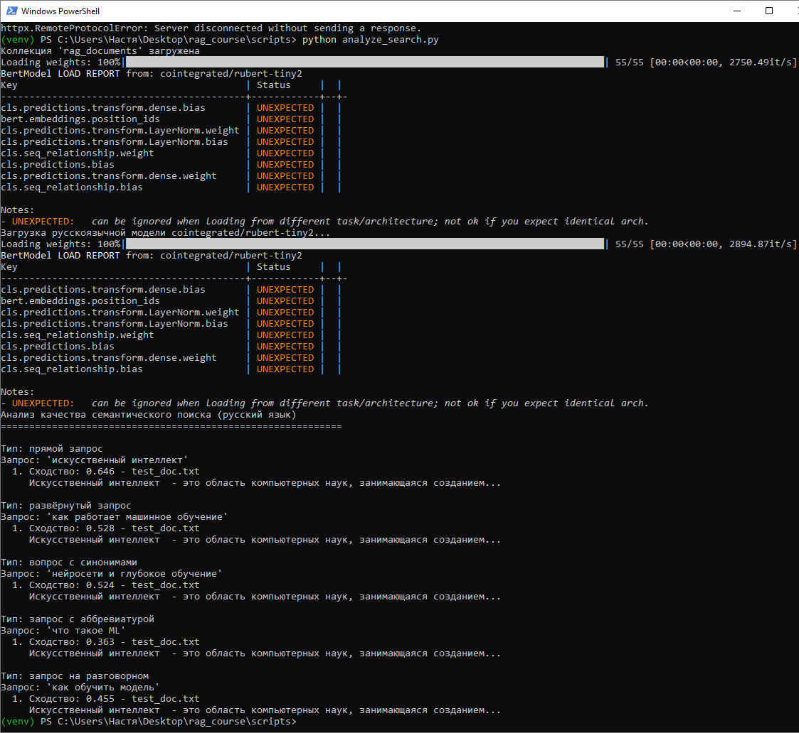
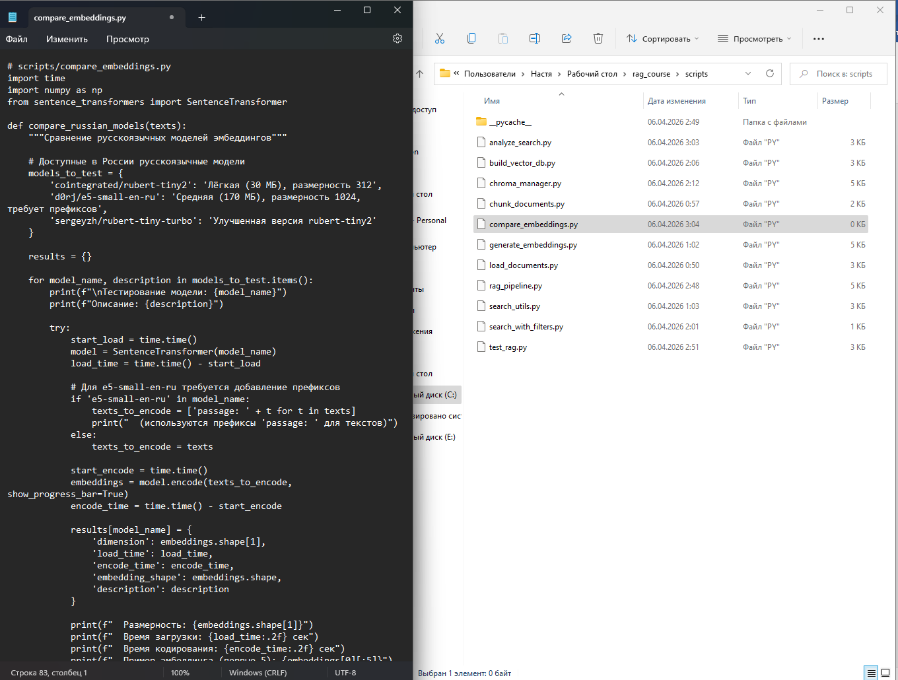
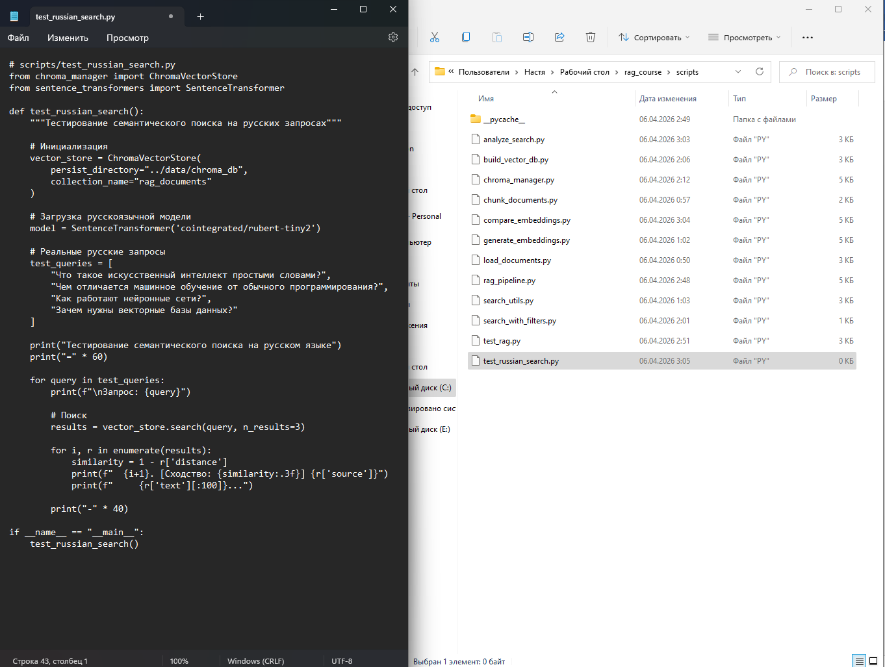

Методическое пособие №5. Семантический поиск в RAG
Цель занятия
Углублённое изучение семантического поиска, настройка параметров и анализ качества
Продолжительность: 4 академических часа
Пошаговая инструкция
Теоретическое введение
Семантический поиск - это метод поиска по смыслу, а не по ключевым словам. В RAG-системах он является основным механизмом извлечения контекста. Для работы с русским языком мы используем модель cointegrated/rubert-tiny2, которая создаёт семантическое пространство, где русские слова и фразы располагаются по смыслу.
Создайте файл scripts/analyze_search.py. Импортируйте библиотеки и отключение интернета:
# scripts/analyze_search.py
import numpy as np
import json
import os
os.environ["TRANSFORMERS_OFFLINE"] = "1"
os.environ["HF_HUB_OFFLINE"] = "1"
from sentence_transformers import SentenceTransformer
from chroma_manager import ChromaVectorStoreИмпортируются библиотеки для работы с массивами данных, JSON-файлами, а также отключаются интернет-проверки для моделей, чтобы они загружались исключительно из локального кэша. Подключаются классы для работы с эмбеддингами и векторной базой данных.
class SearchAnalyzer:
"""Анализатор качества семантического поиска на русском языке"""
def __init__(self, vector_store, model_name='cointegrated/rubert-tiny2'):
self.vector_store = vector_store
print(f"Загрузка русскоязычной модели {model_name}...")
self.model = SentenceTransformer(model_name)Создаётся класс для анализа качества поиска. В конструкторе сохраняется ссылка на векторное хранилище и загружается русскоязычная модель эмбеддингов.
def search_queries(self, queries, n_results=3):
"""Выполняет поиск для списка запросов"""
results = {}
for query in queries:
search_results = self.vector_store.search(query, n_results=n_results)
results[query] = search_results
return resultsМетод принимает список поисковых запросов, для каждого выполняет поиск в векторной БД и возвращает словарь с результатами.
def analyze_by_query_type(self):
"""Анализ качества поиска для разных типов запросов"""
# Русскоязычные запросы разных типов
test_queries = {
"прямой запрос": "искусственный интеллект",
"развёрнутый запрос": "как работает машинное обучение",
"запрос с синонимами": "нейросети и глубокое обучение",
"запрос с аббревиатурой": "что такое ML",
"запрос на разговорном": "как обучить модель"
}
print("Анализ качества семантического поиска (русский язык)")
print("=" * 60)
for query_type, query in test_queries.items():
print(f"\nТип: {query_type}")
print(f"Запрос: '{query}'")
results = self.vector_store.search(query, n_results=3)
for i, r in enumerate(results):
# distance в Chroma: 0 = идеально, больше = хуже
similarity = 1 - r['distance']
print(f" {i+1}. Сходство: {similarity:.3f} - {r['source']}")
print(f" {r['text'][:80]}...")
return resultsОпределяются пять типов русскоязычных запросов (прямой, развёрнутый, с синонимами, с аббревиатурой, разговорный). Для каждого выполняется поиск, расстояние преобразуется в сходство, и выводятся топ-3 результата с указанием источника и фрагмента текста.
def main():
# Инициализация
vector_store = ChromaVectorStore(
persist_directory="../data/chroma_db",
collection_name="rag_documents"
)
analyzer = SearchAnalyzer(vector_store)
analyzer.analyze_by_query_type()
if __name__ == "__main__":
main()Создаётся подключение к векторной базе данных, инициализируется анализатор и запускается анализ качества поиска по всем типам запросов. Блок if __name__ == "__main__" обеспечивает выполнение скрипта при прямом запуске.

cd scripts
python analyze_search.py
Создайте файл scripts/compare_embeddings.py. Импортируйте библиотеки и отключение интернета:
# scripts/compare_embeddings.py
import os
import time
import numpy as np
from sentence_transformers import SentenceTransformer
# Отключаем интернет-проверки (для уже скачанных моделей)
os.environ["TRANSFORMERS_OFFLINE"] = "1"
os.environ["HF_HUB_OFFLINE"] = "1"Импортируются библиотеки и отключаются попытки подключения к интернету.
def compare_russian_models(texts):
"""Сравнение русскоязычных моделей эмбеддингов из локальных папок"""
# Прямые пути к уже скачанным моделям
models_to_test = {
"C:\\Users\\%USERNAME%\\.cache\\huggingface\\hub\\models--cointegrated--rubert-tiny2\\snapshots\\e8ed3b0c8bbf4fb6984c3de043bf7d2f4e5969ae": "rubert-tiny2 (312 dim)",
"C:\\Users\\%USERNAME%\\.cache\\huggingface\\hub\\models--sergeyzh--rubert-tiny-turbo\\snapshots\\main": "rubert-tiny-turbo (312 dim) - если скачана"
}
results = {}
for model_path, description in models_to_test.items():
# Проверяем, существует ли папка с моделью
if not os.path.exists(model_path):
print(f"\nМодель не найдена по пути: {model_path}")
print(f" Пропускаем: {description}")
continue
print(f"\nТестирование модели: {description}")
print(f"Путь: {model_path}")
try:
start_load = time.time()
model = SentenceTransformer(model_path) # загрузка из локальной папки
load_time = time.time() - start_load
start_encode = time.time()
embeddings = model.encode(texts, show_progress_bar=True)
encode_time = time.time() - start_encode
results[model_path] = {
'name': description,
'dimension': embeddings.shape[1],
'load_time': load_time,
'encode_time': encode_time,
'embedding_shape': embeddings.shape
}
print(f" Размерность: {embeddings.shape[1]}")
print(f" Время загрузки: {load_time:.2f} сек")
print(f" Время кодирования: {encode_time:.2f} сек")
print(f" Пример эмбеддинга (первые 5): {embeddings[0][:5]}")
except Exception as e:
print(f" Ошибка при загрузке: {e}")
results[model_path] = {'error': str(e)}
return resultsОпределяются прямые пути к папкам с уже скачанными моделями. Перед загрузкой проверяется существование папки. Если модель не найдена - она пропускается.
def main():
# Русскоязычные тестовые тексты
test_texts = [
"Искусственный интеллект - это область компьютерных наук.",
"Машинное обучение - это подраздел искусственного интеллекта.",
"Нейронные сети вдохновлены структурой человеческого мозга."
] * 5
print("Сравнение русскоязычных моделей эмбеддингов")
print("=" * 60)
print(f"Количество тестовых текстов: {len(test_texts)}")
results = compare_russian_models(test_texts)Создаются тестовые тексты и запускается функция сравнения.
print("\n" + "=" * 60)
print("Сводная таблица:")
print("-" * 60)
for path, metrics in results.items():
if 'error' not in metrics:
print(f"\nМодель: {metrics['name']}")
print(f" Размерность: {metrics['dimension']}")
print(f" Время загрузки: {metrics['load_time']:.2f} сек")
print(f" Время кодирования: {metrics['encode_time']:.2f} сек")
if __name__ == "__main__":
main()Выводится сводная таблица с результатами сравнения для всех найденных моделей.
Ручная установка модели sergeyzh/rubert-tiny-turbo
Если модель не скачивается автоматически, скачайте файлы вручную по ссылкам и положите в папку:
C:\Users\%USERNAME%\.cache\huggingface\hub\models--sergeyzh--rubert-tiny-turbo\snapshots\main\

python compare_embeddings.pyСоздайте файл scripts/test_russian_search.py. Импортируйте библиотеки:
# scripts/test_russian_search.py
from chroma_manager import ChromaVectorStore
from sentence_transformers import SentenceTransformerИмпортируются класс для работы с векторной базой данных и библиотека для работы с моделями эмбеддингов.
def test_russian_search():
"""Тестирование семантического поиска на русских запросах"""
# Инициализация
vector_store = ChromaVectorStore(
persist_directory="../data/chroma_db",
collection_name="rag_documents"
)
# Загрузка русскоязычной модели
model = SentenceTransformer('cointegrated/rubert-tiny2')Создаётся функция test_russian_search(), внутри неё подключается векторная база данных и загружается русскоязычная модель эмбеддингов.
# Реальные русские запросы
test_queries = [
"Что такое искусственный интеллект простыми словами?",
"Чем отличается машинное обучение от обычного программирования?",
"Как работают нейронные сети?",
"Зачем нужны векторные базы данных?"
]
print("Тестирование семантического поиска на русском языке")
print("=" * 60)Определяется список из четырёх русскоязычных поисковых запросов и выводится заголовок тестирования.
for query in test_queries:
print(f"\nЗапрос: {query}")
# Поиск
results = vector_store.search(query, n_results=3)
for i, r in enumerate(results):
similarity = 1 - r['distance']
print(f" {i+1}. [Сходство: {similarity:.3f}] {r['source']}")
print(f" {r['text'][:100]}...")
print("-" * 40)
if __name__ == "__main__":
test_russian_search()Для каждого запроса выполняется поиск в векторной БД, из расстояния вычисляется сходство, и выводятся топ-3 результата с указанием источника и фрагмента текста. Блок if __name__ == "__main__" обеспечивает запуск функции при выполнении скрипта.

python test_russian_search.pyЗадание для самостоятельного выполнения
- Создайте тестовый набор из 10 вопросов и вручную оцените качество поиска (отметьте, какие результаты релевантны).
- Вычислите метрики Recall@3 и Precision@3 для вашего поиска.
- Сравните две модели эмбеддингов по качеству поиска на ваших тестовых данных.
- Напишите функцию, которая автоматически оценивает среднее косинусное сходство для топ-3 результатов.
Контрольные вопросы
- Что такое семантическое пространство и как оно формируется?
- Почему косинусное сходство является основной метрикой для текстов?
- Какие факторы влияют на качество семантического поиска?
- Как интерпретировать значение distance в Chroma?
- В чём разница между полнотой (recall) и точностью (precision) поиска?
Критерии оценки
| Критерий | Баллы |
|---|---|
| Реализация анализатора качества поиска | 2 |
| Тестирование разных параметров поиска | 2 |
| Сравнение моделей эмбеддингов | 2 |
| Анализ проблемных запросов | 2 |
| Выполнено дополнительное задание | 2 |
Максимальный балл: 10